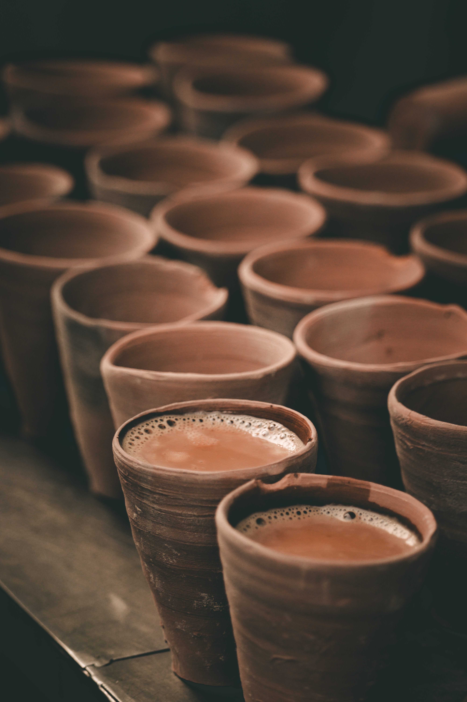

Chai Tea Latte

Description
Chai or as it's famous at Starbucks as "Chai Tea Latte" is a beverage that has originated in India. It is a flavourful combination of English breakfast tea
and exotic spices. Like coffee, some people don't start their day without a cup of Chai. In combination with bread-butter, cookies or even even crackers it is a
complete meal for some. So, let's start brewing the most amazing beverage!
Prep time: 5 minutes
Cook time: 10 minutes
Ingredients
- Water - 1/2 cup
- Milk - 1 cup
- Cardamom - 2-3(grounded)
- Cinnamon - 1 small stick
- Black better - 1/4 tsp
- Sugar - 1 tsp (or as needed)
- Tea leaves (dried and powderd) - 1 tsp
Steps
- Start with boiling the water in the pan.
- When the water starts to boil add cardomom, cinnamon and black pepper. Folllow this by adding tea.
- Melt the butter in a pan and add it to the batter slowly with continuing to mix the ingredients.
- Let the water with the ingredients boil for 2-3 minutes. You can notice that the tea colors the water.
- Add milk and turn down the heat to medium. Let it boil for 4-5 minutes.
- Strain the tea and pour it in a cup. It is ready to be served!